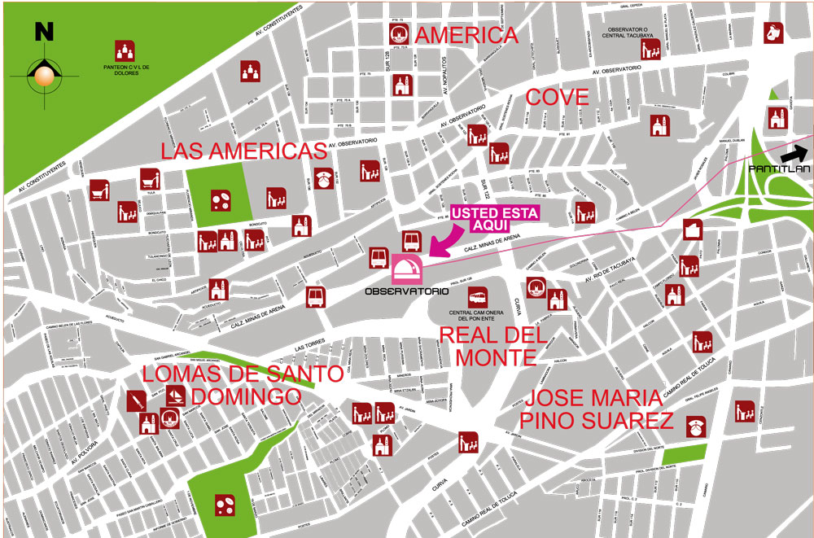

Descripción del ícono
El ícono de la estación representa un Observatorio.
El origen del Instituto de Astronomía de la UNAM se remonta a 1867 cuando se funda el Observatorio Astronómico Nacional (OAN), que se inicia en la azotea del Palacio Nacional, en el centro de la Ciudad de México.
Como consecuencia del crecimiento de la ciudad, este observatorio es trasladado primero al Castillo de Chapultepec en 1878 y posteriormente en el Palacio del Arzobispo de Tacubaya conocido ahora como el Observatorio de Tacubaya, inaugurado en 1908.
En 1929 se expide el decreto de autonomía de la UNAM y el OAN es incorporado a la Universidad.
Servicios y transporte en la estación

Dos elevadores, los cuales se usan si cuenta con tarjeta Libre Acceso y rampas de acceso.

Sobre la calle Escuadrón 201 s/n, colonia Real del Monte, frente a la terminal de Autobuses Observatorio-Poniente.

Sobre la calle Escuadrón 201 s/n, colonia Real del Monte, frente a la terminal de Autobuses Observatorio-Poniente. Horario de atención, de lunes a viernes de 9:00 a 19:00 horas.

Por la salida dirección Pantitlán, cruzando la calle se encuentra la Central de Autobuses Poniente (también conocida como Central Observatorio).
Plano de barrio
Salidas de la estación
- Nororiente: Avenida Minas de Arena, Colonia Pino Suárez.
- Norponiente: Avenida Minas de Arena, Colonia Pino Suárez.
- Suroriente: Real del Monte, Colonia Pino Suárez.
- Surponiente: Real del Monte, Colonia Pino Suárez.